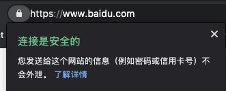
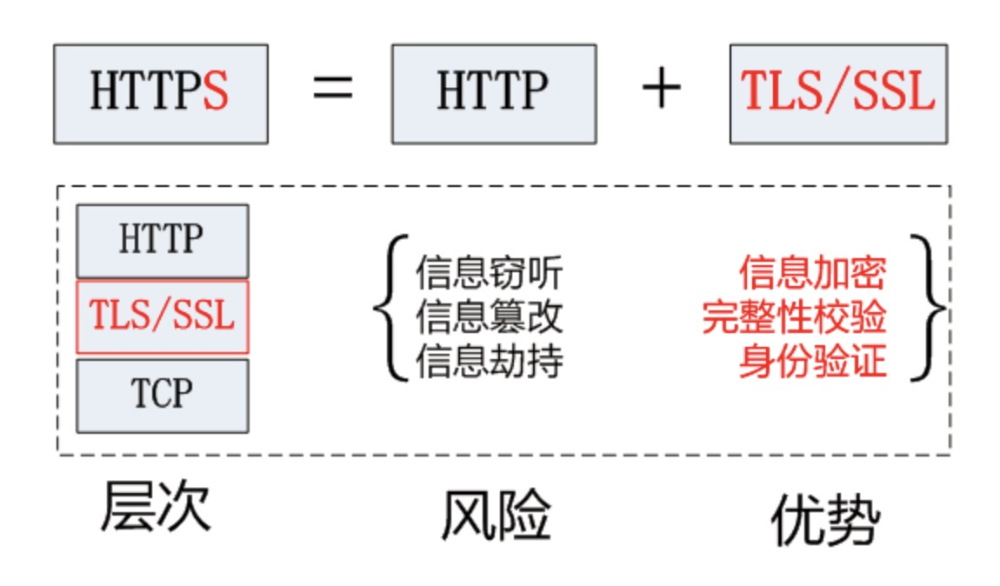
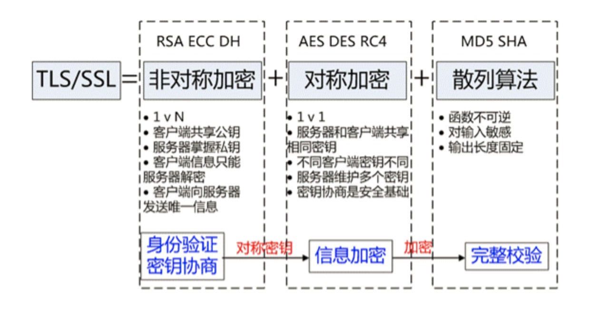
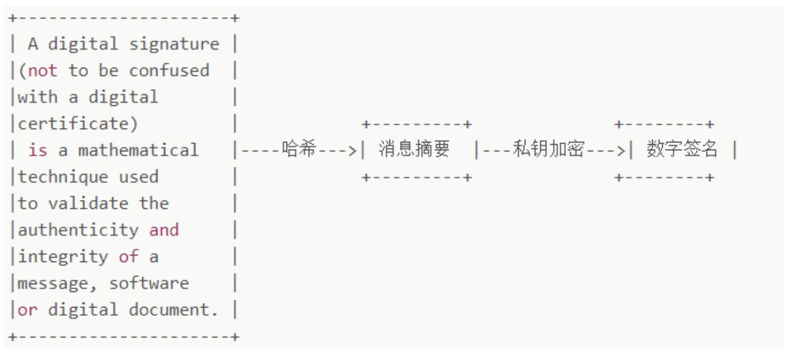
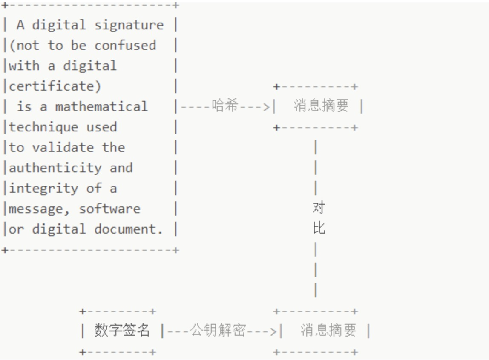
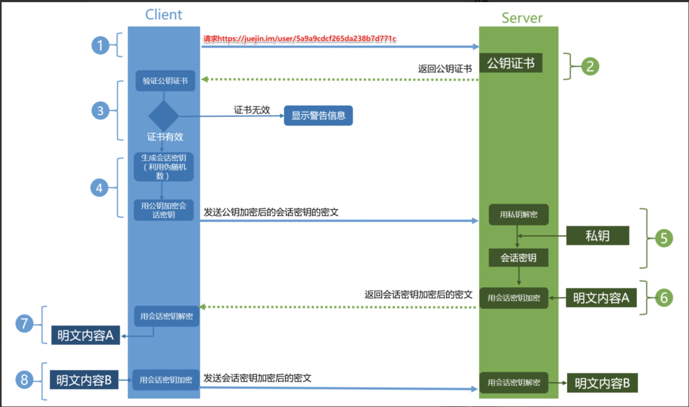

什么是HTTPS
HTTPS是在HTTP上建立SSL加密层，并对传输数据进行加密，是HTTP协议的安全版。
HTTPS的用途有：
- 对数据进行加密，并建立一个信息安全通道，来保证传输过程中数据安全。
- 对网站服务器进行真实的身份认证。

为什么需要HTTPS
在HTTP协议中有可能存在信息窃取或身份伪装等安全问题。使用HTTPS通信机制可以有效的防止这些问题。
HTTP存在哪些安全问题
通信使用明文，内容可能被窃听
HTTP不具备加密功能，无法对通信整体进行加密处理。所以HTTP报文使用明文方式发送。明文的缺陷会导致数据泄露、数据篡改、流量劫持、钓鱼攻击等安全问题。无法证明报文的完整性，可能存在被篡改
完整性指的是信息的准确度，即无法判断信息的是否准确。没有任何办法确认，发出的请求、响应和接收到的请求、响应是前后相同的。不验证通信方的身份，可能遭遇伪装
HTTP协议中的请求和响应不会对通信方进行确认。任何人都可以伪造虚假服务器欺骗用户，实现钓鱼诈骗。
HTTPS如何解决HTTP的问题
HTTPS并非是应用层的新协议。只是HTTP通信接口部分用SSL和TLS协议代替。
通常HTTP直接和TCP通信，当使用SSL时，则演变成先和SSL通信，再有SSL和TCP通信。
在采用了SSL协议后，HTTP就拥有了HTTPS的加密、证书和完整性保护这些功能。HTTP加上加密处理和认证及完整性保护之后就是HTTPS。

HTTPS协议主要功能基本都依赖于TLS/SSL协议。TLS/SSL的功能主要依赖于三类基本算法：散列函数、对称加密、非对称加密。其中用非对称加密用来实现身份认证和秘钥协商，对称加密算法采用协商的秘钥对数据进行加密，基于散列函数验证信息完整性。

解决内容被窃听问题 –加密
对称加密
加密解密用同一个秘钥。加密和解密都会用到秘钥。
对称加密方式加密时必须将秘钥发送给对方。非对称加密
公开秘钥加密使用一对非对称的秘钥。分别为公钥和私钥。
非对称加密特点是信息传输一对多，所以服务器只需要维持一个私钥就能和多个客户端进行加密通信了。缺点：
- 公钥是公开的，针对私密加密的信息，黑客截获后可以使用公钥进行解密，获取内容。
- 公钥不含服务器的信息，使用得对称机密算法无法确保服务器身份的合法性，存在被攻击的风险。
- 使用非对称加密在数据加密解密过程中需要消耗一定的时间。降低了数据传输的效率。
对称加密+非对称加密（HTTPS)
使用对称加密好处是解密的效率比较快，非对称加密使得传输的内容不能被破解。
在交换秘钥环节使用非对称加密，之后建立的通信交换报文则是以对称加密方式。
解决报文可能遭篡改(信息完整性) – 数字签名
数字签名的作用：
- 能确定消息确实是由发送方签名并发出来的
- 数字签名能确定消息的完整性，证明数据是否又被篡改过。
数字签名的生成

将一段文本先用hash函数生成消息摘要，然后用发送者的私钥加密生成数字签名，与原文一同传送给接受者。
校验数字签名流程

接受者只有用发送者的公钥才能解密被加密的摘要信息。然后用HASH函数对收到的原文产生一个摘要信息。与上一步得到的摘要信息对比。如果相同则说明收到的信息是完整的，否则说明信息被修改过。
证书的颁发机构(CA)。
解决通信方身份被伪装的问题 – 数字证书
数字证书认证机构处于客户端与服务器双方都可信赖的地方机构的立场上。
数字证书认证机构的业务流程：
- 服务器方向第三方机构CA提交公钥、组织信息、个人信息（域名）等信息申请认证。
- CA通过多种手段验证申请者提供的信息的真实性，如组织是否存在、企业是否合法、是否拥有域名的所有权。
- 审核通过，CA会向申请者签发认证文件-证书。证书包含：申请者公钥、申请者组织信息和个人信息、签发机构CA的信息、有效时间、证书序列号、等信息的明文，同时包含签名。
- Client向Server端发出请求时，Server返回证书文件。
- Client读取证书中的相关信息，采用相同的散列函数计算得到信息的摘要信息，然后利用对应CA的公钥解密签名数据，对比证书的信息摘要是否一致，则可以确定证书的合法性。
- Client还会验证证书的相关域名信息、有效时间等信息；客户端会内置信任CA的证书信息。
HTTPS工作流程

- Client发起一个HTTPS请求，端口
443 - server把配置好的公钥证书返回给客户端。
- Client验证公钥证书：证书是否有效，证书用途是否匹配Client请求的站点，是否在CRL吊销列表，上级证书是否有效… 如果验证通过则继续，否则显示警告信息。
- Client 使用伪随机数生成加密所使用的的对称秘钥，然后用证书的公钥加密这个堆成秘钥，发送给Server。
- Server 使用私钥解密这条消息，得到对称秘钥。此时 Client和Server都有了相同的对称秘钥。
- Server 使用对称秘钥加密 “明文内容A” 发送给Client。
- Client 使用对称秘钥解密响应的密文，得到“明文内容A”
- Client 再次发起HTTPS的请求，使用对称秘钥加密请求的“明文内容B”，然后Server使用对称秘钥解密密文，得到“明文内容B”
HTTPS与HTTP的区别
- HTTP 是明文传输协议，HTTPS协议是有SSL+HTTP协议构建的可进行加密传输、身份认证的网络协议
- HTTPS比HTTP更加安全，对搜索引擎更友好，利于SEO,谷歌、百度优先索引HTTPS网页;
- HTTPS需要用到SSL证书，而HTTP不用;
- HTTPS标准端口443，HTTP标准端口80;
- HTTPS基于传输层，HTTP基于应用层;
- HTTPS在浏览器显示绿色安全锁，HTTP没有显示;
! 证书需要收费